<div class="single-project-section section">
    <div class="container">
        <div class="row single-project-row">
            <div class="col-lg-9 col-md-8 content">
                <div class="project-single-first-box">
                    <div class="project-single-title">
                        <h1>Loss Prevention Tools Web App</h1>
                    </div>
                </div>
                <div class="project-single-desc">
                        <p>This was done as a design concept for a client.</p>
                        <p>A design of Loss Prevention Tools, to deliver the Minimum Viable Product focusing on user ​research
                           wireframes, clickable prototype, user stories, and flows to ​validate ​client's approach ​for ​a ​new ​
                           loss prevention ​web ​app.</p>
                </div>
                <div class="margin-box margin-p">
                    <h2>Overview</h2>
                    <div class="opacity-box"></div>
                    <h3>About</h3>
                        <p>Loss Prevention Tools is working to build a digital tool geared toward retail loss prevention to 
                           assist loss prevention experts with analyzing data and case management.</p>
                        <p>For this concept piece, I worked on a team of three and served as the Project Manager, Information
                            Architect, and Visual Designer.</p>
                    <h4>Goals:</h4>
                        <ul>    
                            <li>Create a more intuitive data analysis web app for analyzing internal theft within retailers.</li>
                            <li>Validate ideas and user base.</li> 
                            <li>Offer a less complicated and less expensive tool that is more straightforward and doesn’t 
                                require intensive training.</li>
                            <li>Offers key components of other loss prevention tools.</li>        
                        </ul>
                    <h3>Duration</h3>
                        <p>This project was completed over a 2.5 week design sprint.</p>
            
                    <h3>Process</h3>
                        <ul> 
                            <li>Business Analysis (develop understanding of client through kick off meeting and in depth 
                                interview</li>       
                            <li>User research</li>
                            <li>User Interviews</li>
                            <li>Information Architecture</li>
                            <li>Proto Persona &amp; Task Scenario Development</li>
                            <li>Visual Design</li>
                            <li>Final Prototype</li>
                        </ul> 
                    <h3>Final Design</h3>
                    <div class="img-box">
                            <figure>
                            
                            <figcaption>Figure 1. Loss Prevention Tools app wireframe and final mockup.</figcaption>    
                            </figure>
                    </div> 
                </div>
               
               <div class="margin-box margin-p">
                    <h2>Discovery</h2>
                    <div class="opacity-box"></div>
                    <h3>Client Interview</h3>
                        <p>We compiled a list of questions about the company, business goals, and asked the client during kick
                           off meeting. The responses gave us great insight about the client and his specific goals for this 
                           project.
                    <h3>What do users think about their current loss prevention digital tool? What would make their job easier?</h3>
                        <p>The first 5 days of the project was spent with research.Even though  Lauren was the head researcher, 
                            it made sense to help her in looking for the right target audience and conduct interviews. First, I 
                            went out with the team for initial interview with store managers around nearby businesses during 
                            daytime. Secondly, I went to 4 stores still in downtown (All Saints Clothing, Carhartt, Ross, Barnes 
                            and Noble) asking the Loss Prevention managers with 17 formal questions and recruited them for testing 
                            later. So far, I managed to interview 2 successfully. None said yes for the testing.
                        </p>
                    <h3>Main themes from the interviews:</h3>  
                        <ul>
                            <li>Problem: Manually sifting through the data to find the outliers, which takes 8-20 hours.</li>
                            <li>The way that managers and directors go about their investigations really depends on what type of theft
                                occurs (examples include: refunds, returns, before/after hours transactions, voids, discounts, paperwork 
                                errors, training errors).</li>
                            <li>Frequency of data varies from store to store, ranging from daily to weekly.</li>
                            <li>Data uploading varies, ranging from copying and pasting, IT uploading, and a real-time updated P.O.S.</li>
                        </ul>   
                    <h3>Surprising Findings & Insights:</h3>
                        <ul>
                            <li>4/4 users were unhappy with their current platform</li>
                            <li>Not one platform used or one consistent standardized procedure.</li>
                        </ul>    
                    <h3>Recommendations for the web app after initial research:</h3>
                        <ul>
                            <li>Simple and clear dashboard that makes it easy for users to upload data and filter for results they 
                                are looking for.</li>
                            <li>Option to filter top results, date range, print/PDF/email report.</li>
                            <li>Ability to pull out certain results and organize them in ‘To Investigate’ and ‘Investigated’ folders
                                within dashboard.</li>        
                        </ul>
                    <h3>The Problem & Solution</h3> 
                        <p>Those who work in loss prevention are finding it difficult to effectively upload and analyze data for 
                           specific internal theft categories with a tool that is price effective and tailored to their specific needs.
                        <p>We will create a platform that loss prevention experts can utilize to upload data, filter the proper 
                           categories, analyze the results, and conduct investigations in a time-efficient manner.<p>                              
               </div> 

                <div class="margin-box margin-p">
                    <h2>Approach</h2>
                    <div class="opacity-box"></div>
                    <h3>Who is our Primary User? Secondary User?</h3>
                        <p>Lauren developed 2 proto persona based on the initial user research. Richard, being the Director of Loss 
                            Prevention, was our primary user and Danielle, the Loss Prevention Associate, was the secondary target user 
                            on the other hand.</p>
                        <div class="img-box">
                                <div style="display: flex">
                                    <figure>
                                        
                                        <figcaption>Primary persona</figcaption>
                                    </figure>
                                    <figure>
                                        
                                        <figcaption>Secondary persona</figcaption>
                                    </figure> 
                                </div>  
                            </div>
                        <p>The persona and scenario development helped to keep us on track as a team and prioritize the features to be added
                            to the web app. The persona also helped us in creating a particular flow a user might possibly take. 
                        </p>
                        <p>I , as the visual designer, sketched a storyboard to illustrate Richard’s challenges in using the current loss 
                            prevention tool his company provided.
                        </p> 
                        <div class="img-box">
                                <div style="display: flex">
                                    <figure>
                                        
                                        <figcaption>This is based on a story of a Loss Prevention Director who happens to be Richard; he wants
                                                to investigate an employee and uses the POS data that is fed into the security system to determine 
                                                if that employee is committing fraud/theft. So you can see Richard is extremely overstimulated with 
                                                the amount of data he is looking at. He does not want to manually sift through the data. He needs help.
                                                He is so frustrated that he throws his hand up in the air.</figcaption>
                                    </figure>   
                                </div>
                        </div>
                    <h3>Feature Prioritization</h3> 
                        <p>Based on the results of user research the team and I agreed that in order for this to be a usable app, this 3 success 
                            metrics had to be considered:
                        </p>
                            <ul>
                                <li>Quick learning curve.</li>
                                <li>Easy to use for Loss Prevention Investigators.</li>
                                <li>Validate idea and identify user base.</li>   
                            </ul>
                        <p>With the solution statement created, I continued the storyboard with this:</p> 
                            <div style="display: flex">
                                <figure>
                                    
                                    <figcaption>You can see Richard here wondering about a better tool on the market that will help him analyze data 
                                        and manage cases. Later, you notice him using the less complicated and straightforward Loss Prevention Tool web 
                                        app with a big smile on his face. Helps him better in analyzing internal theft efficiently. He’s happy. Because 
                                        of that, Richard and the store is able to preserve profit and prevent losses. So, happy store owner.</figcaption>
                                </figure>
                            </div>               
                    <h3>Information Architecture</h3>
                        <p>My teammates and I agreed to consider the layout of the web app simple. With that and the research findings in 
                            mind, I being the information architect made this sitemap. I wanted to create a simple and logical site structure 
                            that can help users achieve their end goal, and to allow them to easily understand how to navigate, giving them 
                            a positive experience. I started with some sketches on paper before I came up with the final one.</p>
                        <div class="img-box">
                            <div style="display: flex">
                                <figure>
                                    
                                    <figcaption>Sitemap in paper</figcaption>
                                </figure>
                                <figure>
                                    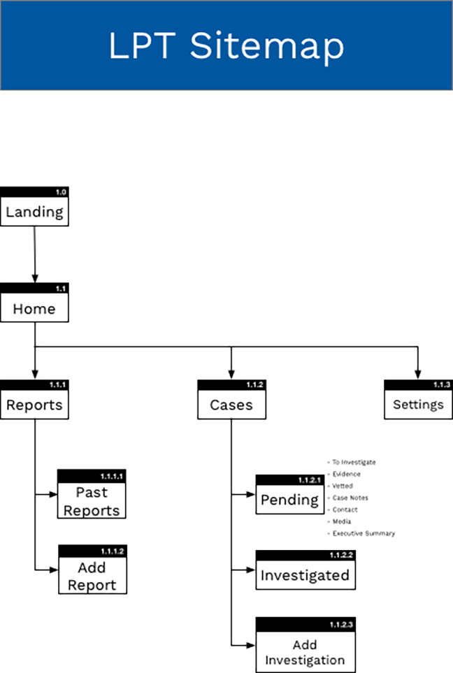
                                    <figcaption>Final Sitemap</figcaption>
                                </figure> 
                            </div>  
                        </div> 
                        <p>After some analysis and careful thought, I went on to develop a user need’s focused flow which can help Richard 
                        and Danielle  to complete their task, achieve their goals and feel better about it. Tasks include uploading a file, 
                        filtering data, running report, viewing analyzed report, saving it, sharing the data and exporting it.and I started the 
                        initial user flows in paper and  finalized it via OmniGraffle.                      </p> 
                        <div class="img-box">
                            <div style="display: flex">
                                <figure>
                                    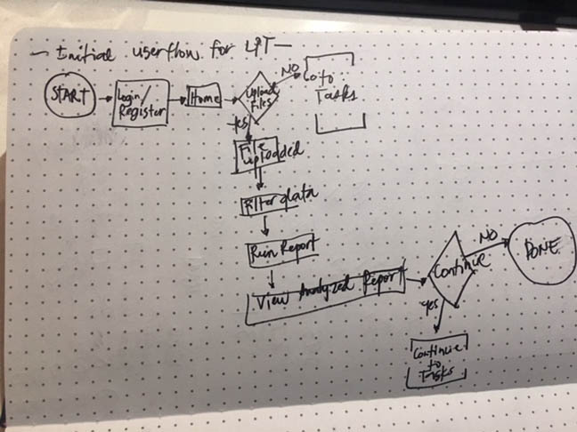
                                    <figcaption>User flow in paper</figcaption>
                                </figure>
                                <figure>
                                    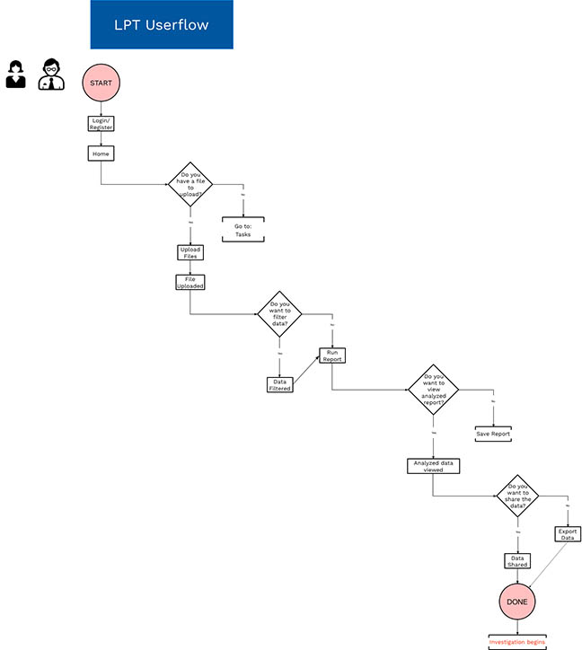
                                    <figcaption>Final user flow</figcaption>
                                </figure> 
                            </div>  
                        </div> 
                </div>

                <div class="margin-box margin-p">
                    <h2>Design</h2>
                    <div class="opacity-box"></div>
                    <h3>Sketching</h3> 
                    <p>Dom as the Interaction Designer led the creation of some rough sketches for possible featured screens. I also provided my input 
                        as we did another round of whiteboarding. </p> 
                    <div class="img-box">
                            <div style="display: flex">
                                <figure>
                                    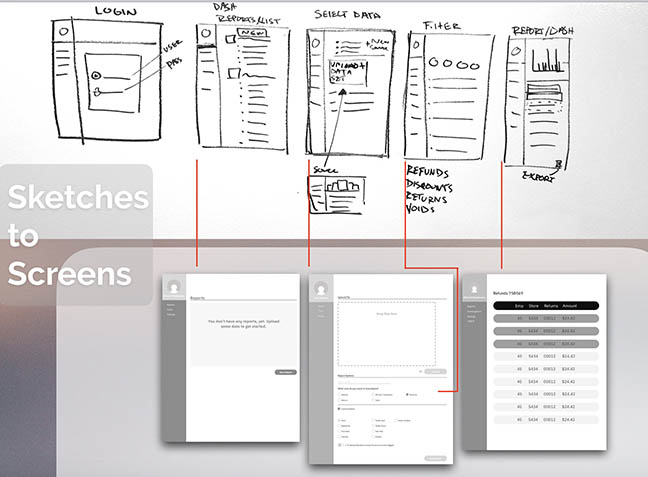
                                </figure>
                            </div>
                    </div>            
                    <h3>Design Studio</h3>
                        <p>A major decision my group mates and I thought of was to conduct a design studio led by Dom the Interaction Designer. The purpose 
                            of this was to understand the client's views and to clearly define the key screens the web app needed. It was a vital 
                            brainstorming, and learning experience for myself and the team as this helped in knowing what major components needed to be 
                            displayed for the web app design.
                        </p>
                        <div class="img-box">
                                <div style="display: flex">
                                    <figure>
                                        
                                    </figure>
                                    <figure>
                                        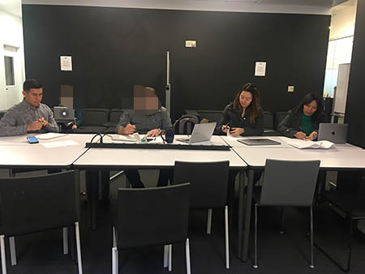
                                    </figure> 
                                </div>  
                        </div> 
                    <h3>Wireframes</h3> 
                        <p>As the interaction designer, Dom made an initial wireframes. As soon as he was done, he handed it over to Lauren for initial user testing. 
                            It was challenging to find target users. It was more hard to convince any available Loss Prevention Specialist to test the screens. 
                            But luck was on our side and was able to get someone to try it. Lauren led the user testing by sending the link to a user and then asking
                            the user to go through it while talking out loud over the phone for any concerns, ideas and more. I recorded the conversation using my phone 
                            while Lauren and Dom took notes on the other hand. We did this process 3 times. We were also able to conduct an in person user testing. I was 
                            very fortunate to find this person at the right place at the right time. After Lauren relayed the documentation results from the user testing, 
                            Dom incorporated the changes and started designing high fidelity wires.
                        </p> 
                    <h3>Visual Design &amp; Mock Up</h3> 
                        <p>As the Visual Designer of the group without any good background of visual design, I had to challenge myself by doing the “Branding Challenge’ I found online. 
                            This helped me in incorporating the right colors, typography and more into the wireferames. Here is my report:</p>
                        <div class="img-box">
                            <div style="display: flex">
                                <figure>
                                    
                                    <figcaption>Moodboard1</figcaption>
                                </figure>
                                <figure>
                                    
                                    <figcaption>Moodboard2</figcaption>
                                </figure> 
                            </div>
                        </div>  
                        <div class="img-box">
                                <figure>
                                    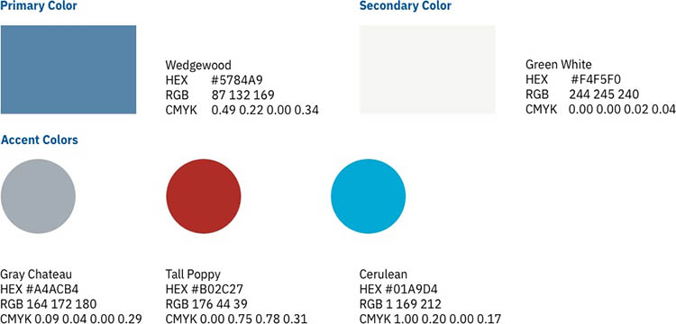
                                        <figcaption>Colors</figcaption>
                                </figure> 
                        </div>  
                    
                        <div class="img-box">
                                <figure>
                                    
                                        <figcaption>Typography</figcaption>
                                </figure>   
                        </div>
                        <div class="img-box">
                                <figure>
                                    
                                        <figcaption>Images</figcaption>
                                </figure>   
                        </div>
                        <div class="img-box">
                                <figure>
                                        
                                        <figcaption>Final Logo</figcaption>
                                    </figure>  
                        </div>
                        <div class="img-box">
                                <figure>
                                        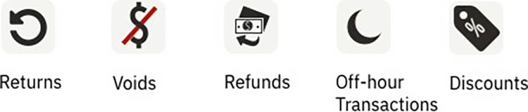
                                        <figcaption>Icons</figcaption>
                                    </figure>  
                        </div>
                        <div class="img-box">
                                <figure>
                                        
                                        <figcaption>Radio Buttons & Checkboxes</figcaption>
                                    </figure>  
                        </div>    
                        <div class="img-box">
                                <figure>
                                        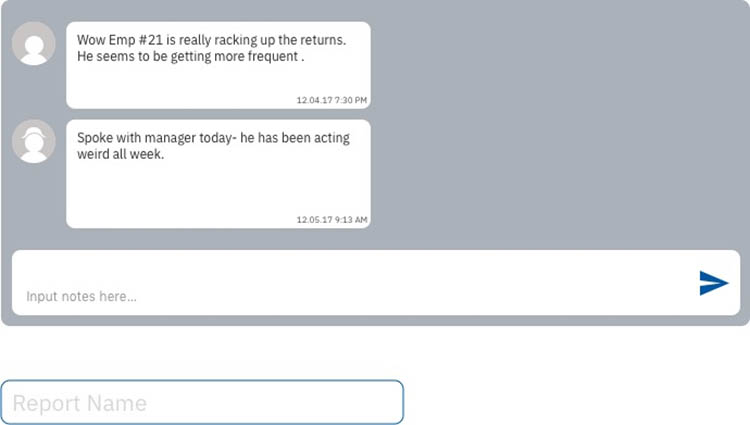
                                        <figcaption>Form Fields</figcaption>
                                    </figure>  
                        </div>     
                        <div class="img-box">
                                <figure>
                                        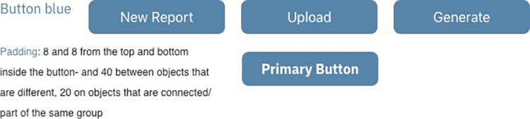
                                        <figcaption>Main Buttons</figcaption>
                                    </figure>  
                        </div>
                        <div class="img-box">
                                <figure>
                                        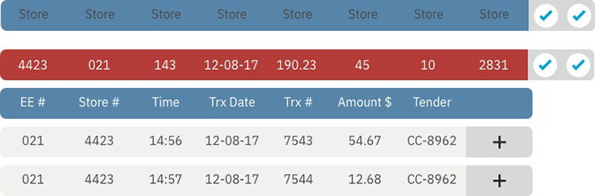
                                        <figcaption>Show / Hide Toggle</figcaption>
                                    </figure>  
                        </div> 
                        <div class="img-box">
                                <figure>
                                        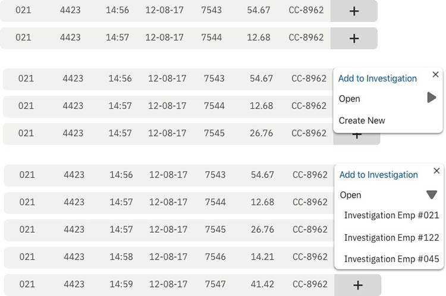
                                        <figcaption>Add / Drop-down List</figcaption>
                                    </figure>  
                        </div> 
                        <div class="img-box">
                                <figure>
                                        
                                        <figcaption>File Upload</figcaption>
                                </figure>  
                        </div> 
                        <div class="img-box">
                                <figure>
                                        
                                        <figcaption>Callout</figcaption>
                                </figure>  
                        </div>         
                    <h3>Final Mock Up</h3>    
                    <div class="img-box">
                            <div style="display: flex">
                                <figure>
                                    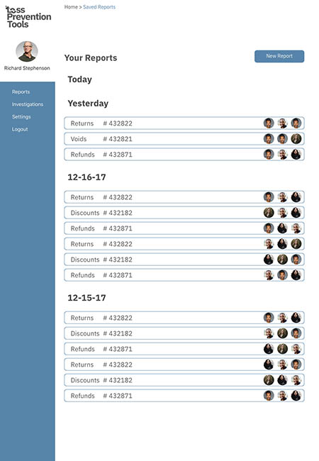
                                    <figcaption>Home screen</figcaption>
                                </figure>
                                <figure>
                                    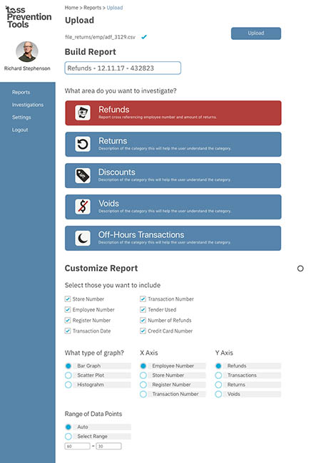
                                    <figcaption>Reports screen</figcaption>
                                </figure> 
                            </div>  
                    </div>
                    <div class="img-box">
                        <div style="display: flex">
                            <figure>
                                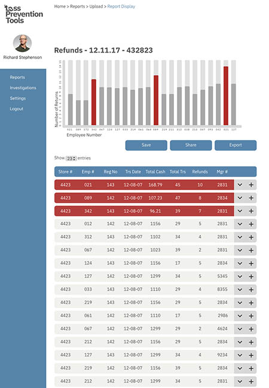
                                <figcaption>Sample Report Display</figcaption>
                            </figure>
                            <figure>
                                
                                <figcaption>Investigation</figcaption>
                            </figure> 
                        </div>  
                    </div>
                    <h3>Prototype</h3>
                    <div class="img-box">
                            <figure>
                                
                                <figcaption>Prototype</figcaption>
                            </figure>   
                    </div>
                </div>

                <div class="margin-box margin-p">      
                    <h2>Recommended Next Steps For The Client</h2>
                        <div class="opacity-box"></div>
                            <ul>
                                <li>Test prototype with more loss prevention experts.</li>
                                <li>Continue validating the idea.</li>
                                <li>Develop MVP to acquire sign-ups from potential customers.</li>
                            </ul>
                </div>

                <div class="margin-box margin-p">      
                    <h2>Reflections</h2>
                        <div class="opacity-box"></div>
                            <ul>
                                <li>For future steps, I would like to spend time finessing the visual design. 
                                    I admit that this was quite a handful of a role but Dom and Lauren made it 
                                    easy for me to fulfill it.</li>
                                <li>I initially wanted to take on the Interaction Design role because I think 
                                    that this discipline of UX Design is somewhat my weakest. This should not be 
                                    an excuse to not do something about it but in order for my skill to develop I 
                                    should be practicing designing / adding  more screens for some areas of the web 
                                    app that were left uncovered.</li>
                                <li>Project management for this kind of “project” was new to me. Lauren and Dom had 
                                    the role for the previous project. Once again, they were kind enough to help me 
                                    do my job smoothly. Because of that, I’d like to research more on different ways 
                                    to manage projects in the UX Design or any tech field productively.</li>  
                                <li>I also got good feedback from teammates, classmates and instructors on my presentation
                                    introduction skills mixed with an unusual  humor which made our supposedly boring topic
                                    interesting. This just motivates me more to study quirky versus professional ways to 
                                    start a presentation in front of a small audience or large.</li>
                                <li>Lastly, the key finding was that our users / Loss Prevention Experts (and with consideration 
                                    to the proto persona as well) need to have a better loss prevention tool user experience in 
                                    terms of data / report analysis and managing cases. We attempted to solve that by designing 
                                    the web app with the success metrics in mind- Quick Learning Curve; Easy to use for Loss 
                                    Prevention Investigators; Validate Idea and Identify user base. More testing is needed to find 
                                    out if this is truly an effective solution for users.</li>                  
                            </ul>
                </div>            

                <div class="margin-box">
                    <blockquote>
                        Most people make the mistake of thinking design is what it looks like. People think
                        it’s this veneer – that the designers are handed this box and told “make
                        it look good”. That’s not what we think design is. It’s not just what it
                        looks like and feels like. Design is how it works.
                        <span>Steve Jobs, US computer engineer & industrialist.</span>
                    </blockquote>
                </div>
                

                <div class="project-info-line">
                    <div class="info-line">
                        <span class="span-title">Date</span>
                        <span>December, 2016</span>
                    </div>
                    <div class="info-line">
                        <span class="span-title">Type</span>
                        <span>Mobile apps, Prototyping design</span>
                    </div>
                    <div class="info-line">
                        <span class="span-title">Share</span>
                        <span id="sharing-links">
                            <a target="_blank" href="#" class="fa fonts-icons mdi mdi-facebook facebook"></a>
                            <a target="_blank" href="#" class="fa fonts-icons mdi mdi-twitter twitter"></a>
                            <a target="_blank" href="#" class="fa fonts-icons mdi mdi-google-plus plusone"></a>
                            <a target="_blank" href="#" class="fa fonts-icons mdi mdi-pinterest pinterest"></a>
                        </span>
                    </div>
                </div>
                <div class="download-app">
                    <a target="_blank" class="site-btn btn-theme-blue" href="https://play.google.com/store">Download app</a>
                </div>
            </div>
            <div class="col-lg-3 col-md-4 hidden-sm hidden-xs sidebar-wrapper">
                <div class="sidebar-form">
                    <div class="margin-box">
                        <h4>Want similar project?</h4>
                        <div class="opacity-box">
                            <p>Are you working on something similar? I would love to help make it happen!
                                Just send me your e-mail and we will discuss your project together.</p>
                        </div>
                    </div>
                    <div class="form-wrapper">
                        <form id="sidebar-form" novalidate>
                            <div class="form-group">
                                <label for="sidebar-name">Name</label>
                                <input type="text"
                                        class="site-input name-input"
                                        id="sidebar-name"
                                        placeholder="Your name"
                                        required
                                        data-validation-required-message="Invalid input">
                                <p class="help-block"></p>
                                <p class="help-block-success">done</p>
                            </div>
                            <div class="form-group">
                                <label for="sidebar-email">E-mail</label>
                                <input type="email"
                                        class="site-input email-input"
                                        id="sidebar-email"
                                        placeholder="Contact e-mail"
                                        required
                                        data-validation-email-message="Invalid input"
                                        data-validation-required-message="Invalid input">
                                <p class="help-block"></p>
                                <p class="help-block-success">done</p>
                            </div>
                            <div>
                                <input class="site-btn btn-theme-blue" type="submit" value="Send message">
                            </div>
                        </form>
                    </div>
                </div>
            </div>
        </div>
    </div>
</div>
